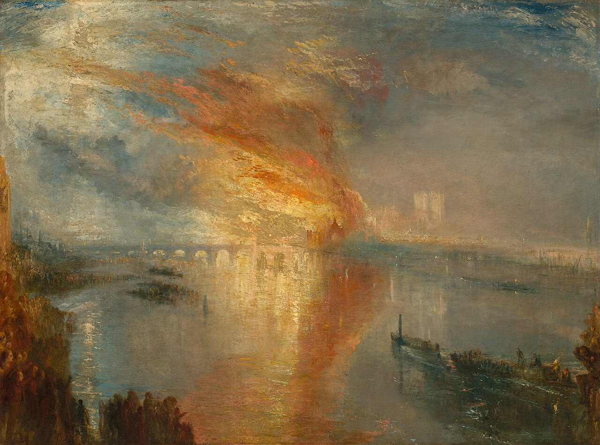

William Turner (1775-1851) è stato il visionario che ha insegnato al mondo a dipingere l'invisibile: l'aria, il vapore, la luce e il calore. Maestro del Romanticismo, Turner ha superato la descrizione della realtà per catturare la potenza divina della natura, diventando il precursore assoluto dell'impressionismo e dell'astrazione moderna.
"La luce è il mio Dio; non dipingo ciò che vedo, ma ciò che provo davanti allo spettacolo del creato."
Nella notte del 16 ottobre 1834, Londra bruciava. Le Houses of Parliament venivano divorate dalle fiamme sotto gli occhi di migliaia di spettatori. Turner, affascinato dal Sublime — quell'unione di terrore e bellezza — documentò l'evento da una barca sul Tamigi, regalandoci una delle analisi visive più potenti mai realizzate sull'impotenza umana.
1. Il Vortice di Energia Pura

In questo dettaglio, Turner rompe ogni schema tradizionale. Il cielo non è più atmosfera, ma un vortice incandescente di Giallo di Cromo e arancio. Le pennellate sono rapide, materiche e quasi furiose. Qui l'artista non sta descrivendo il fumo, sta dipingendo l'energia stessa della distruzione, rendendo la materia architettonica un'ombra evanescente inghiottita dalla luce.
2. L'Alchimia del Tamigi

Il fiume si trasforma in una colata di oro fuso. Turner studia la rifrazione della luce con una precisione quasi scientifica, ma la restituisce con una poesia travolgente. Il contrasto tra il blu freddo delle acque notturne e il calore accecante dei riflessi crea una tensione magnetica, portando lo spettatore al centro di un'apocalisse cromatica dove gli elementi si fondono.
3. L'Uomo davanti all'Infinito

In basso, quasi soffocate dalla grandiosità del disastro, scorgiamo le sagome del popolo di Londra. Queste figure, piccole e fragili, sono fondamentali per comprendere il messaggio di Turner: davanti alla furia primordiale della natura, il potere politico e l'ambizione umana svaniscono. Siamo solo spettatori silenziosi di un ciclo eterno di distruzione e rinascita.
4. La Visione Totale

L'opera nella sua interezza rivela una composizione magistrale. La diagonale del ponte di Westminster funge da freccia prospettica, scaraventando l'occhio del pubblico verso il fulcro del fuoco. È un'opera "enorme" non solo per dimensioni ideali, ma per la capacità di farci sentire il calore sulla pelle e il battito accelerato di una città che osserva la fine di un'epoca.
"Dentro il Quadro - Un viaggio oltre la tela"